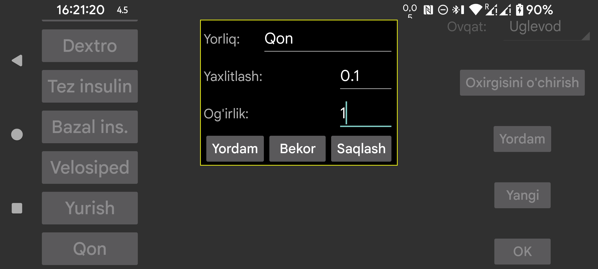

ar be de es fr hi it ja ko nl pl pt ru tr uk uz zh en
Miqdor kiritishda ishlatiladigan yorliq nomi. Chap o‘rta menyudagi Yangi miqdor orqali ma’lum sana va vaqtga bog‘langan miqdorni qo‘shishingiz mumkin. Bu miqdorlar glyukoza grafikida o‘sha vaqt nuqtasida yoki ro‘yxatda ko‘rsatiladi.
Kerfstok soat ilovasida ishlatiladi. Shu yorliq ostida kiritilgan miqdorlar ko‘rsatilgan qiymatga yaxlitlanadi.
0 = to‘liq aniqlik, 0.5 = 0.5 qadam bilan yaxlitlash va hokazo.
0 ga o‘rnatilganda, miqdorlar o‘z qiymatidan qat’i nazar grafikda ma’lum balandlikda ko‘rsatiladi. Agar og‘irlik 0 dan katta bo‘lsa, shu yorliq ostida kiritilgan har bir miqdor shu og‘irlikka ko‘paytiriladi va glyukoza grafigi bilan bir xil koordinatalarda kvadrat sifatida ko‘rsatiladi. Masalan, barmoqdan olingan glyukoza o‘lchovlarini glyukoza sensori o‘lchovlari kabi ko‘rsatish uchun og‘irlikni 1 ga qo‘yishingiz mumkin.